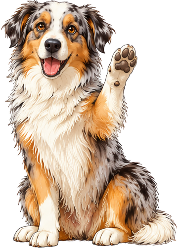

Der Hund erklärt
Ich verstehe mehr, als du denkst.
Hi! Ich bin's, euer Aussie.
Wir Hunde verstehen rund 165 Wörter.
Ein Border Collie kannte sogar über 1.000!
Also: Rede ruhig mit mir. Ich hör zu!
Durchschnitt nach Hundeforscher S. Coren · Border Collie „Chaser“: Studie 2011
Folgen für mehr Hundewissen

HundeWissenTv
